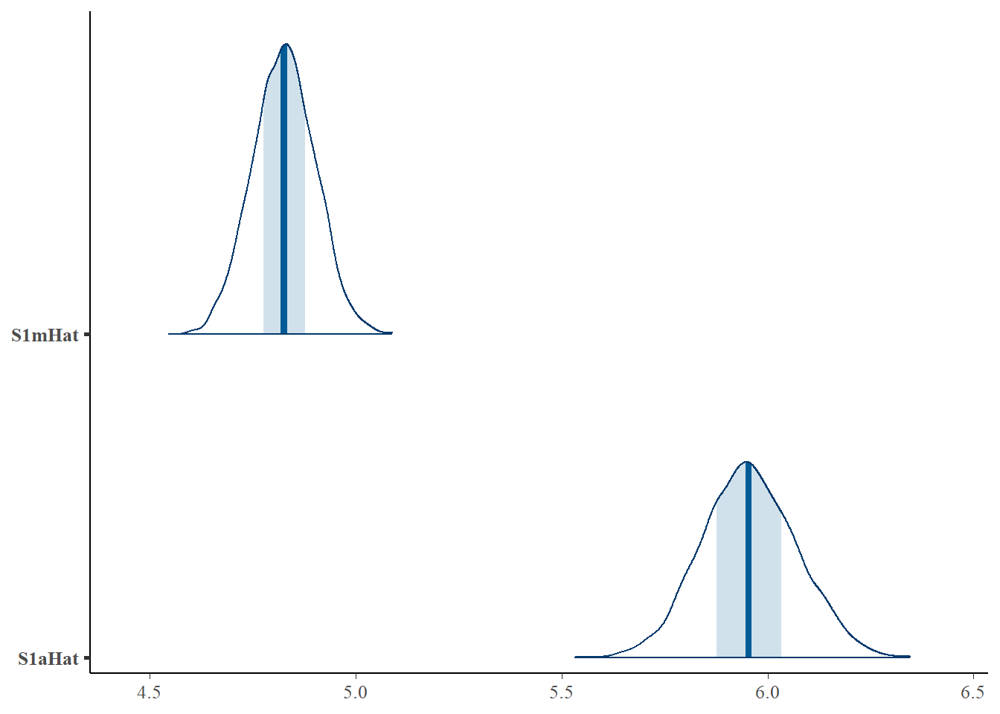
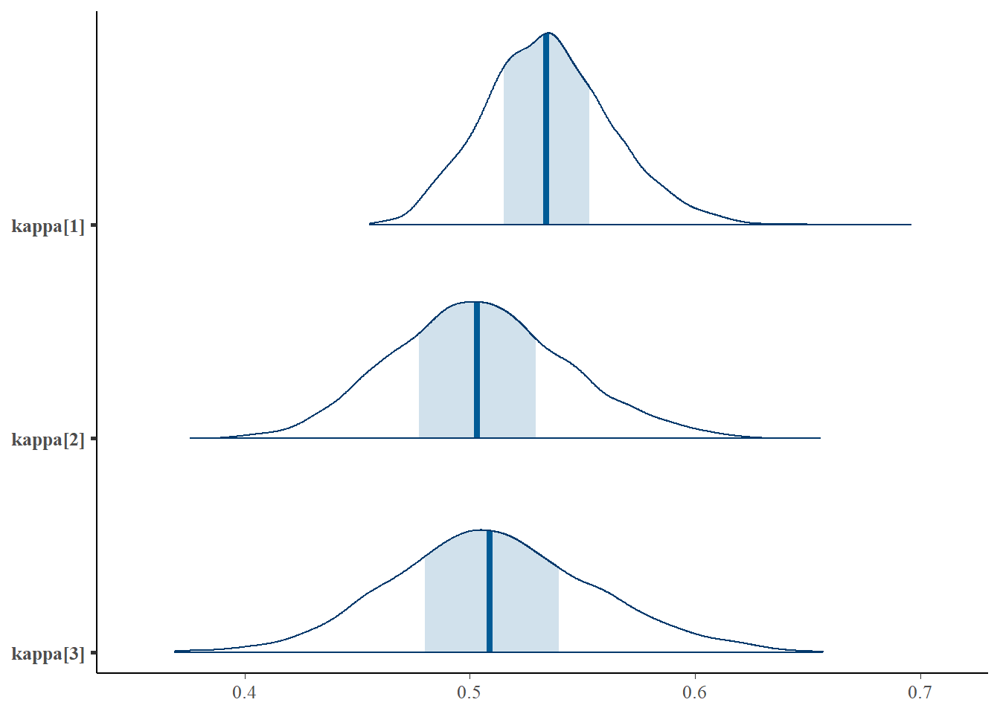

Warning: 4000 of 4000 (100.0%) transitions hit the maximum treedepth limit of 10.
See https://mc-stan.org/misc/warnings for details.Warning: pojawiły się wartości NA na skutek przekształcenia
Warning: pojawiły się wartości NA na skutek przekształcenia variable mean median sd mad q5 q95 rhat ess_bulk ess_tail
logkwHat 3.57 3.57 0.07 0.07 3.45 3.68 1.00 1148 2203
S1mHat 4.83 4.83 0.08 0.08 4.70 4.95 1.00 1462 2573
S1aHat 5.96 5.95 0.11 0.12 5.77 6.15 1.01 1104 1816
dlogkwHat[1] -0.75 -0.75 0.06 0.06 -0.85 -0.65 1.01 713 1217
dlogkwHat[2] -0.98 -0.98 0.05 0.05 -1.06 -0.91 1.01 491 1576
dSmHat[1] 0.25 0.25 0.09 0.10 0.10 0.39 1.04 175 673
dSmHat[2] -0.06 -0.06 0.07 0.07 -0.17 0.06 1.02 158 600
dSaHat[1] 0.81 0.81 0.09 0.09 0.66 0.96 1.03 205 539
dSaHat[2] -0.57 -0.57 0.07 0.07 -0.67 -0.45 1.02 170 647
S2mHat 0.49 0.49 0.03 0.03 0.44 0.53 1.04 95 369
S2aHat 0.97 0.97 0.04 0.04 0.90 1.03 1.04 110 394
beta[1] 0.82 0.82 0.03 0.03 0.77 0.88 1.00 1586 3003
beta[2] 0.46 0.46 0.04 0.04 0.39 0.53 1.01 562 1863
beta[3] 0.51 0.51 0.06 0.06 0.41 0.61 1.01 688 2049
alphaAHat[1] 1.99 1.99 0.16 0.16 1.73 2.26 1.00 841 1702
alphaAHat[2] 2.18 2.17 0.18 0.18 1.88 2.47 1.00 1681 2257
alphaBHat[1] -1.04 -1.04 0.14 0.14 -1.26 -0.81 1.00 695 1365
alphaBHat[2] -0.91 -0.90 0.16 0.16 -1.17 -0.64 1.00 959 1400
dlogkTHat -0.09 -0.09 0.00 0.00 -0.10 -0.09 1.00 4739 3332
omegadlogkT 0.03 0.03 0.00 0.00 0.03 0.04 1.00 3041 2976
apH[1] -0.02 -0.02 0.00 0.00 -0.03 -0.02 1.00 3096 3672
apH[2] 0.09 0.09 0.00 0.00 0.08 0.09 1.00 2446 2977
msigma 0.36 0.36 0.03 0.03 0.32 0.41 1.00 8052 2773
ssigma 1.00 1.00 0.05 0.05 0.92 1.09 1.00 7190 2749
omega[1] 0.92 0.92 0.05 0.05 0.85 1.00 1.00 1629 2521
omega[2] 0.95 0.95 0.05 0.05 0.86 1.04 1.00 1283 2329
omega[3] 1.43 1.43 0.08 0.08 1.31 1.57 1.01 845 2253
rho1[1,1] 1.00 1.00 0.00 0.00 1.00 1.00 NA NA NA
rho1[2,1] 0.87 0.87 0.02 0.02 0.83 0.90 1.01 540 2142
rho1[3,1] 0.77 0.77 0.03 0.03 0.71 0.82 1.02 556 2801
rho1[1,2] 0.87 0.87 0.02 0.02 0.83 0.90 1.01 540 2142
rho1[2,2] 1.00 1.00 0.00 0.00 1.00 1.00 NA NA NA
rho1[3,2] 0.91 0.91 0.02 0.02 0.89 0.93 1.00 1420 2118
rho1[1,3] 0.77 0.77 0.03 0.03 0.71 0.82 1.02 556 2801
rho1[2,3] 0.91 0.91 0.02 0.02 0.89 0.93 1.00 1420 2118
rho1[3,3] 1.00 1.00 0.00 0.00 1.00 1.00 NA NA NA
L2[1,1] 1.00 1.00 0.00 0.00 1.00 1.00 NA NA NA
L2[2,1] 0.94 0.94 0.02 0.02 0.91 0.96 1.01 529 1237
L2[1,2] 0.00 0.00 0.00 0.00 0.00 0.00 NA NA NA
L2[2,2] 0.34 0.34 0.05 0.05 0.27 0.42 1.01 529 1237
kappa[1] 0.53 0.53 0.03 0.03 0.49 0.58 1.01 457 969
kappa[2] 0.50 0.50 0.04 0.04 0.44 0.57 1.02 201 512
kappa[3] 0.51 0.51 0.04 0.04 0.44 0.59 1.05 130 213
tau[1] 2.13 2.13 0.15 0.16 1.89 2.40 1.03 152 1311
tau[2] 2.57 2.56 0.19 0.19 2.26 2.89 1.04 127 1015
